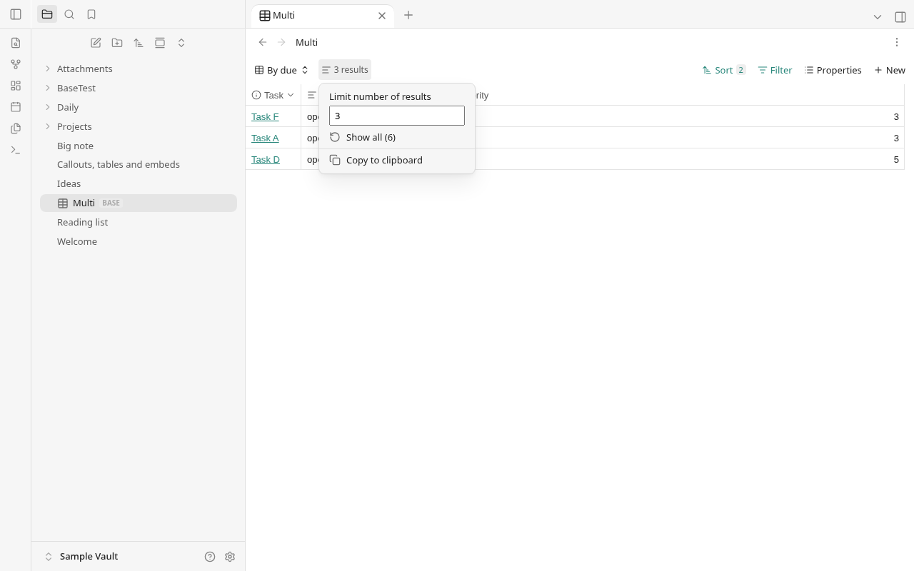
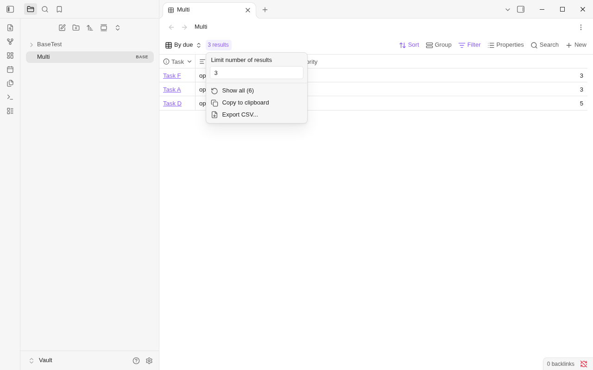
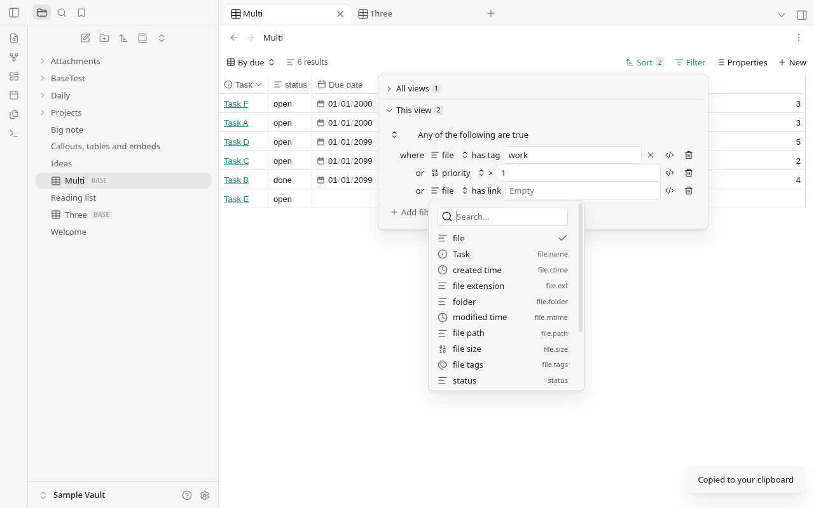
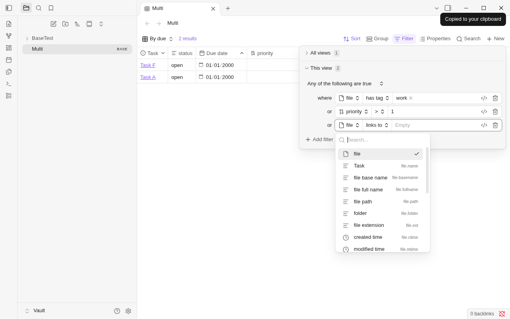
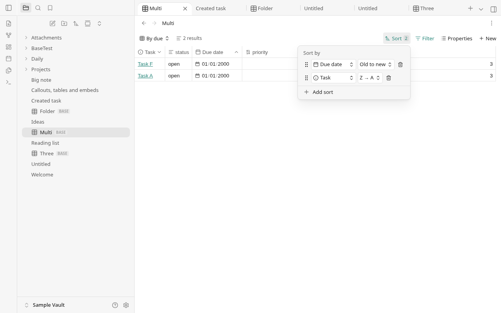
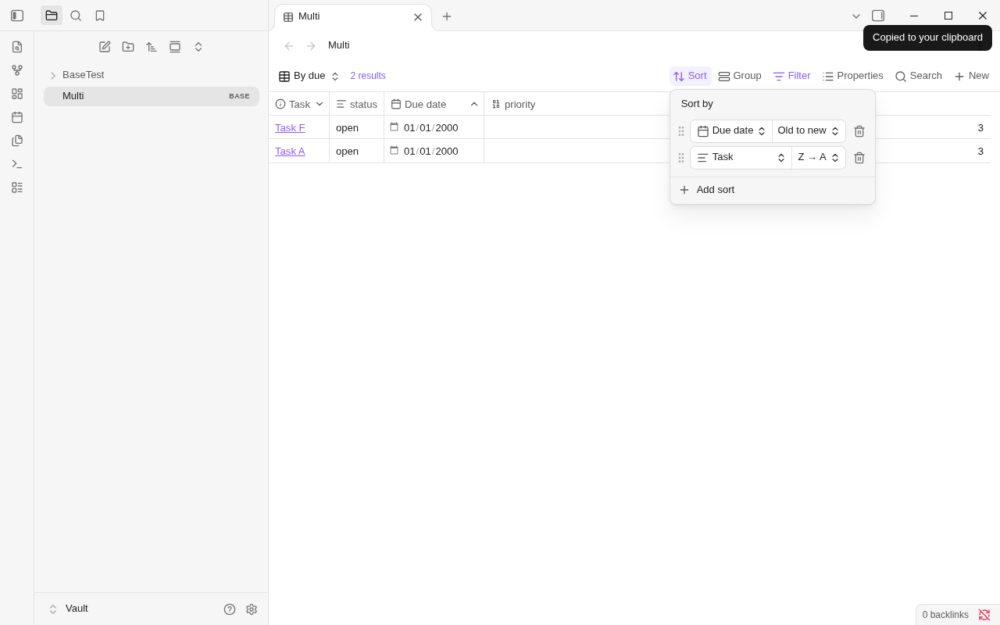
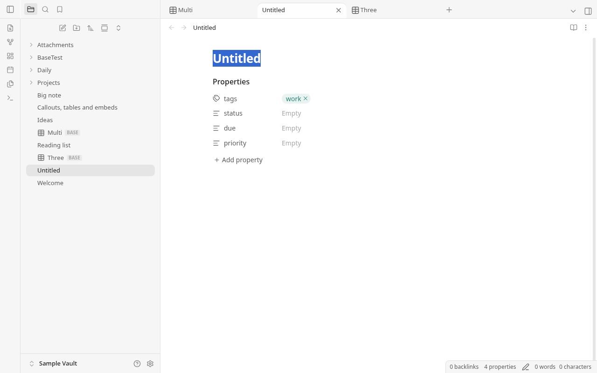
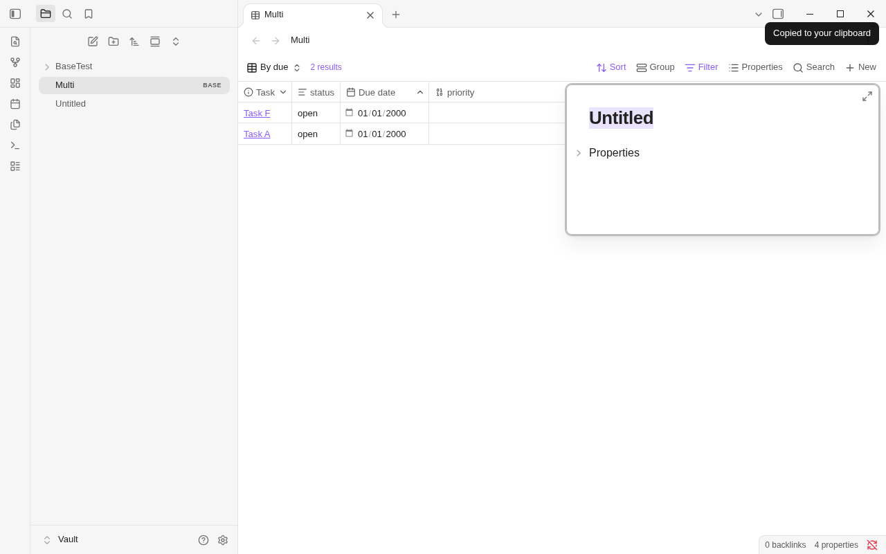
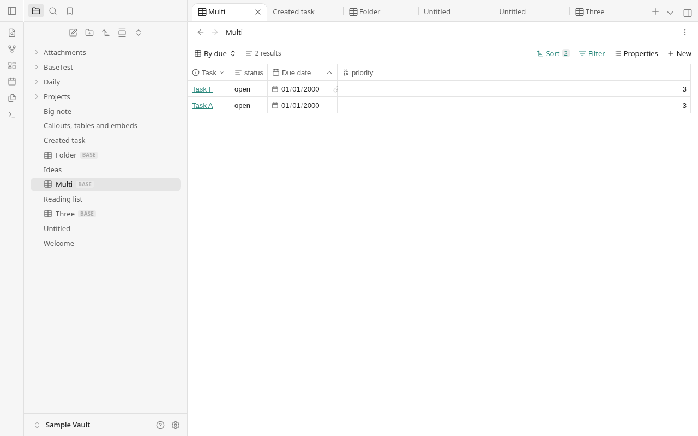
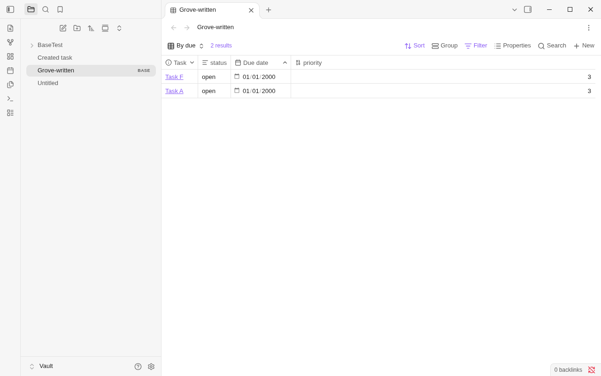

Grove / Obsidian 1.14.4 — round 32 Part B
Results menu
Grove
Obsidian
Incomplete filter and property picker
Grove
Obsidian
Sort controls
Grove
Obsidian
New row
Grove: new tab, selected title
Obsidian: native popover
Grove-written limit: 2, opened in both apps
Grove
Obsidian: identical headers and row order